Pre-amble
This paper is the first of the few experiments done to simulate the COVID-19 outbreak as part of the co-curricular project undertaking for the Association for Computing Machinery, NITK Chapter.
Please note that this paper has not been peer-reviewed, and that I claim no particular expertise in modeling communicable disease outbreaks.
Please also note that this paper only uses data for Chinese cases up to 15th February 2020, and thus it cannot be considered a situation report reflecting the latest available data. The reason for truncating data at 15th February is due to the major changes in the case definitions used by the authorities in Hubei province from that date forward, which add additional complications to the modeling presented here.
The full code is available from the GitHub repository: https://github.com/sujith-bhatt/InfectiousDiseaseModelling.
Modelling the COVID-19 epidemic in China
Given that Wuhan and other cities in Hubei province have effectively been partitioned from the rest of China since about 24th January, it makes sense to model the situation in Hubei only, so we’ll do the model fitting process for that. But first we need some data, and of course we need to do an initial exploratory data analysis before we fit any models!
Obtaining data
Naturally we want our analysis to be reproducible, and that means avoiding all manual abstracting and transcribing of data. Thus we will programmatically acquire the relevant data from the web – we want to be able to just re-run the program code and have analyses automatically update themselves. There are now many potential sources, one of which is this wikipedia page, which is currently being updated very promptly as new data is released. It is a detailed and well-referenced source, and, being wikipedia, it is also versioned.
Lets download and scrape the data contained in the relevant tables on that page that give counts of laboratory-confirmed cases, and deaths in confirmed cases, by day and by province, clean it up and have it ready to use in our analysis. Note that counts of clinically-confirmed cases (by lung CT) that were being reported by Hubei province for a while are not used in this analysis, so we will remove them from the data we acquire.
Here is the code used to acquire data from wikipedia. Notice that the code references a specific version of the relevant wikipedia page.
# download the wikipedia web page
# we use a specific version of the template page directly
# version of the wikipedia page that is used by this version of this document
# we download the specific version into the local system and make further mutations on the local file instead
url = "https://en.wikipedia.org/w/index.php?title=Template:2019%E2%80%9320_Wuhan_coronavirus_data/China_medical_cases_by_province&oldid=941235662"
download.file(url,destfile = "local.html", quiet = TRUE)
outbreak_webpage <- read_html("local.html")
# parse the web page and extract the data from the first table
provinces_confirmed <- outbreak_webpage %>%
html_nodes("table") %>%
.[[1]] %>%
html_table(fill = TRUE) %>%
rename(Date="Date (CST)")
# fix up the column names, get rid of footnotes and other non-data
# and convert columns to appropriate data types.
excl_hubei <- provinces_confirmed %>% select(starts_with("ExcludingHubei")) %>% pull(1)
hubei_sans_wuhan <- provinces_confirmed %>%
select(starts_with("Hubei:")) %>%
select(-contains("clinical", ignore.case = TRUE)) %>%
pull(1)
# utility function to remove commas in numbers as character strings
rm_commas <- function(x) gsub(",", "", x)
provinces_confirmed <- provinces_confirmed %>%
select(-starts_with("ExcludingHubei")) %>%
select(-starts_with("Hubei:")) %>%
rename(Wuhan="Wuhan,Hubei",
National="National(confirmed)") %>%
mutate(NationalSansHubei=excl_hubei,
HubeiSansWuhan=hubei_sans_wuhan,
Date=ymd(Date),
National=stringr::str_split(National, "\\[", simplify=TRUE)[,1],
Hubei=stringr::str_split(Hubei, "\\[", simplify=TRUE)[,1],
Wuhan=stringr::str_split(Wuhan, "\\[", simplify=TRUE)[,1]
) %>%
select(-contains("clinical", ignore.case = TRUE)) %>%
select(-contains("inclusive", ignore.case = TRUE)) %>%
filter(!is.na(Date)) %>%
mutate_if(is.character, rm_commas) %>%
mutate_if(is.character, as.integer)
# work out the order for the columns from the data, descending order
provinces_confirmed %>%
pivot_longer(-Date, names_to="province",
values_to="incident_cases") %>%
group_by(province) %>%
summarise(total=sum(incident_cases, na.rm=TRUE)) %>%
arrange(desc(total)) %>%
pull(province) -> province_order
# re-arrange the columns in the dataset and fill in some
# missing values, but not all, with zeroes.
# Also, lab-confirmed and clinical counts for Wuhan are combined on the
# source Hubei health Commission from 15 Feb so
# set to NA since we cannot split out the lab-confirmed only
provinces_confirmed <- provinces_confirmed %>%
select(c('Date',province_order)) %>%
arrange(Date) %>%
mutate(National=ifelse(is.na(National), 0, National),
Hubei=ifelse(is.na(Hubei), 0, Hubei),
Wuhan=ifelse(is.na(Wuhan), 0, Wuhan)) %>%
mutate(Wuhan=ifelse(Date >= ymd("2020-02-15"), NA, Wuhan),
HubeiSansWuhan=ifelse(Date >= ymd("2020-02-15"), NA, HubeiSansWuhan))
# repeat for deaths
# parse the web page and extract the data from the second table
provinces_deaths <- outbreak_webpage %>%
html_nodes("table") %>%
.[[2]] %>%
html_table(fill = TRUE) %>%
rename(Date="Date (CST)")
# fix up the column names, get rid of footnotes and other non-data
# and convert columns to appropriate data types.
hubei_sans_wuhan <- provinces_deaths %>%
select(starts_with("Hubei:")) %>%
select(-contains("clinical", ignore.case = TRUE)) %>%
pull(1)
provinces_deaths <- provinces_deaths %>%
select(-starts_with("Hubei:")) %>%
rename(Wuhan="Wuhan,Hubei",
National="National(confirmed)") %>%
mutate(
HubeiSansWuhan=hubei_sans_wuhan,
Date=ymd(Date),
National=stringr::str_split(National, "\\[", simplify=TRUE)[,1],
Hubei=stringr::str_split(Hubei, "\\[", simplify=TRUE)[,1],
Wuhan=stringr::str_split(Wuhan, "\\[", simplify=TRUE)[,1]
) %>%
select(-contains("clinical", ignore.case = TRUE)) %>%
select(-contains("inclusive", ignore.case = TRUE)) %>%
filter(!is.na(Date)) %>%
mutate_if(is.character, rm_commas) %>%
mutate_if(is.character, as.integer) %>%
mutate(NationalSansHubei = National - Hubei)
# work out the order for the columns from the data, descending order
provinces_deaths %>%
pivot_longer(-Date, names_to="province",
values_to="deaths_in_confirmed_cases") %>%
group_by(province) %>%
summarise(total=sum(deaths_in_confirmed_cases, na.rm=TRUE)) %>%
arrange(desc(total)) %>%
pull(province) -> province_order_deaths
# re-arrange the columns in the dataset and fill in some
# missing values, but not all, with zeroes
# Also, lab-confirmed and clinical deaths for Wuhan are combined on the
# source Hubei health Commission from 15 Feb so
# set to NA since we cannot split out the deaths in lab-confirmed cases only
provinces_deaths <- provinces_deaths %>%
select(c('Date',province_order_deaths)) %>%
arrange(Date) %>%
mutate(National=ifelse(is.na(National), 0, National),
Hubei=ifelse(is.na(Hubei), 0, Hubei),
Wuhan=ifelse(is.na(Wuhan), 0, Wuhan)) %>%
mutate(Wuhan=ifelse(Date >= ymd("2020-02-15"), NA, Wuhan),
HubeiSansWuhan=ifelse(Date >= ymd("2020-02-15"), NA, HubeiSansWuhan))
# there are still issues with death counts in lab-confirmed after 12th Feb.
# in particular the national count is less than that of Hubei count.
# So we will just truncate the deaths at 12th Feb.
provinces_deaths <- provinces_deaths %>%
filter(Date <= ymd("2020-02-12"))
In the next section, we will compare the wikipedia source to a widely-used source provided by Johns Hopkins University in the US. In the interests of brevity, we won’t display the scraped incidence and deaths data in a table here, but doing so would be good practice.
Checking the data
Wikipedia is crowd-sourced, and anyone can edit the pages at any time, although incorrect information is usually corrected very rapidly by a community of editors and contributors, at least for active pages of interest. That is certainly the case for the wikipedia pages on COVID-19 incidence and deaths data we are using in this analysis. Nonetheless, it is always a good idea to check sources wherever possible.
In fact, there is another source of similar, collated COVID-19 data, maintained by Johns Hopkins University Center for Systems Science and Engineering (JHU CCSE) and used as the source for the dashboard which they provide.
So let’s download that data and compare it to the data we are scraping from wikipedia. We are using a cached copy of this revision of the data.
destfile="./assets/provinces_confirmed_jh.rda"
if (!file.exists(destfile)) {
provinces_confirmed_jh <- read_csv("https://raw.githubusercontent.com/CSSEGISandData/COVID-19/master/csse_covid_19_data/csse_covid_19_time_series/time_series_19-covid-Confirmed.csv") %>%
rename(province="Province/State",
country_region="Country/Region") %>%
pivot_longer(-c(province, country_region, Lat, Long),
names_to = "Date",
values_to="cumulative_cases") %>%
mutate(Date=as.Date(mdy_hm(paste(Date, "23:59", tz="UTC")), tz="China/Beijing")) %>%
filter(country_region == "Mainland China") %>%
group_by(province) %>%
arrange(province, Date) %>%
group_by(province) %>%
mutate(incident_cases = c(0,diff(cumulative_cases))) %>%
ungroup() %>%
select(-c(country_region, Lat, Long, cumulative_cases)) %>%
pivot_wider(Date, names_from = province,
values_from=incident_cases) %>%
rename(InnerMongolia="Inner Mongolia") %>%
mutate(source="Johns Hopkins University")
save(provinces_confirmed_jh, file=destfile)
} else {
load(destfile)
}
compare_provinces_confirmed <- provinces_confirmed %>%
mutate(source="wikipedia") %>%
select(c(Date, source, names(provinces_confirmed_jh))) %>%
bind_rows(provinces_confirmed_jh) %>%
arrange(Date, desc(source)) %>%
select(Date, source, everything())
compare_provinces_confirmed %>%
filter(Date <= ymd("2020-02-12")) %>%
pivot_longer(-c(Date, source),
names_to="province",
values_to="incident_cases") %>%
filter(province %in% c("Hubei", "Beijing", "Guangdong",
"Henan", "Zhejiang", "Hunan", "Anhui",
"Jiangxi", "Jiangsu", "Chongqing",
"Shandong")) -> compare_provinces_confirmed_long
compare_provinces_confirmed_long %>%
bind_rows(compare_provinces_confirmed_long %>%
group_by(Date, source) %>%
summarise(incident_cases = sum(incident_cases, na.rm = TRUE)) %>%
mutate(province = "Sum all provinces")) %>%
ggplot(aes(x=Date, y=incident_cases, colour=source)) +
geom_line() +
geom_point() +
facet_grid(province~., scale="free_y") +
labs(y="Daily incident confirmed cases",
title="Comparison of wikipedia and Johns Hopkins University\nCOVID-19 daily incidence data up to 12th February, 2020.",
subtitle="(Note: not all provinces shown here)",
caption="Sources: Johns Hopkins CSSE Novel coronavirus COVID-19 (2019-nCoV) data repository\nat https://github.com/CSSEGISandData/COVID-19\nwikipedia: https://en.wikipedia.org/wiki/Timeline_of_the_2019–20_Wuhan_coronavirus_outbreak") +
theme(legend.position="top", legend.title = element_blank())
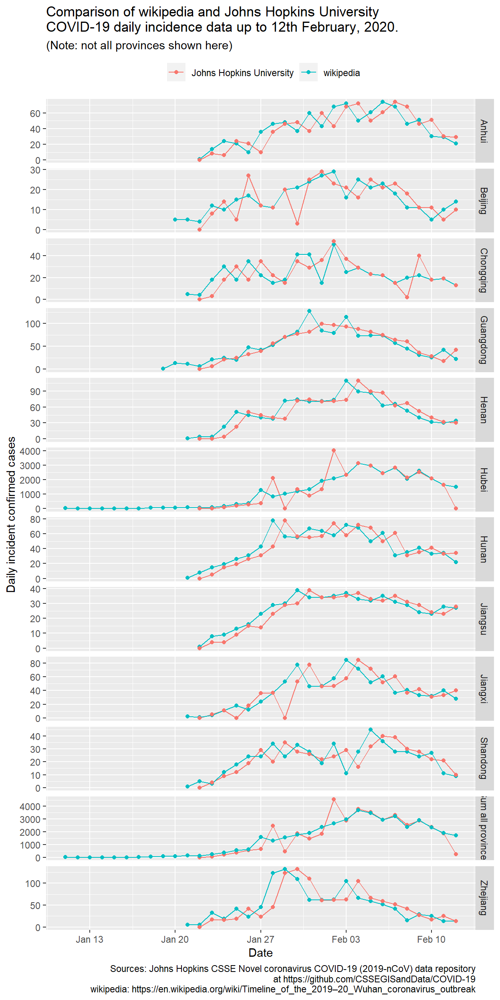
There is clearly a lag of 1 day between the two sources for many, but not all of the provinces. That isn’t a major concern and won’t change any of our analyses very much. Of much greater concern are the large differences for specific days, for the provinces with substantial numbers of cases. The most egregious difference between the JHU and wikipedia incidence data is for Hubei province on 2nd February 2020, for which the JHU data gives 4024 new cases, and the wikipedia data gives 2103 new cases. Note that that was well before the change in case definition for Hubei province, which occured on 12th February. Further research showed that the wikipedia data are, in fact, correct.
Exploratory Data Analysis
Every analysis should start with a thorough EDA. The code for all this is just standard tidyverse fair.
Daily cumulative incidence
First, let’s look at the daily cumulative number of incident, lab-confirmed cases for Wuhan city, for Hubei province (which contains Wuhan), for all the other provinces combined, and for all of China.
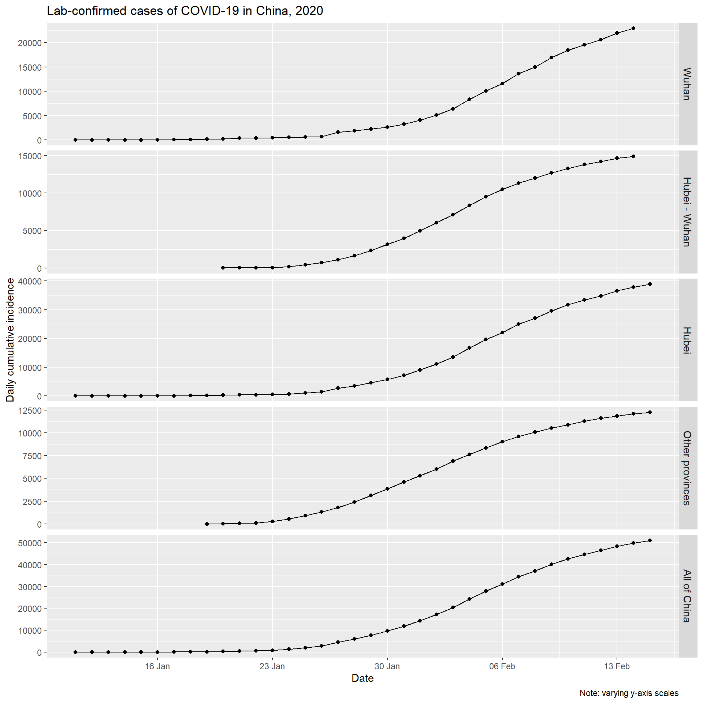
The initial increases for Wuhan and the balance of Hubei, and for all of China look to be approximately exponential, as is expected for epidemic spread. Let’s plot them on a logarithmic y axis. We would expect to see a linear increase on a log scale if the epidemic curve is indeed exponential.
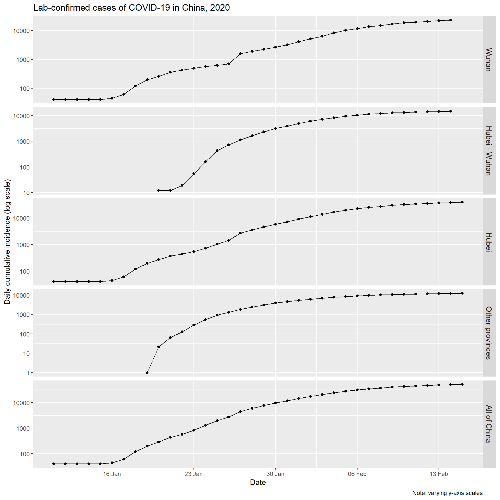
One could convince oneself that log-linearity is present.
Daily incremental incidence
Let’s also look at the daily incremental incidence. This is more informative, and is known in outbreak epidemiological parlance as the epidemic curve. It is traditionally visualised as a bar chart, which emphasises missing data more than a line chart, even one with points as well. We’ll adhere to epidemiological tradition.
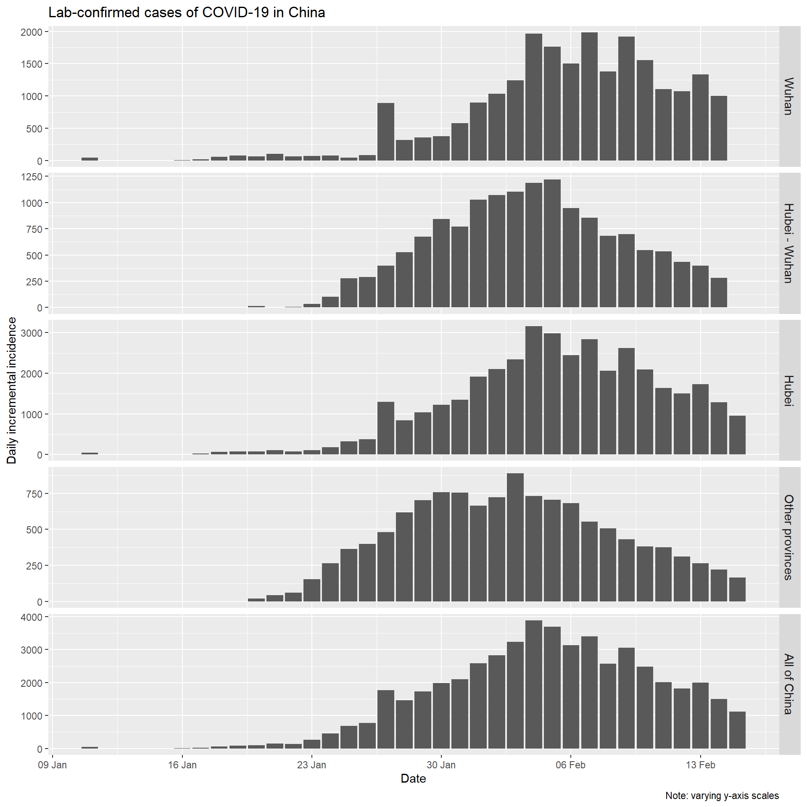
It looks like incidence has plateaued and is now beginning to decline in Wuhan, and that daily incremental incidence is very definitely falling everywhere else in mainland China.
Epidemic curves for all provinces, plus Wuhan city
Finally, let’s quickly visualise the epidemic curves for all the provinces (plus Wuhan city).
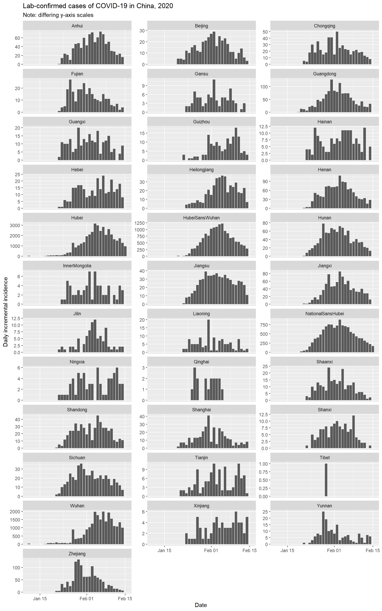
And let’s look at the cumulative incidence, with all provinces on the same scale to put things in perspective.
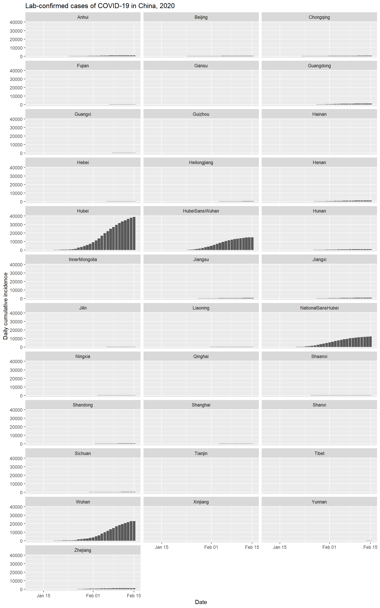
It is clear that Wuhan is not only the epicentre of the outbreak, but that it continues to be the main location of new infections.
Daily cumulative and incremental deaths in lab-confirmed cases
Now let’s look the daily (incremental) number of deaths in lab-confirmed cases for Wuhan city, for Hubei province (which contains Wuhan), for all the other provinces combined, and for all of China.
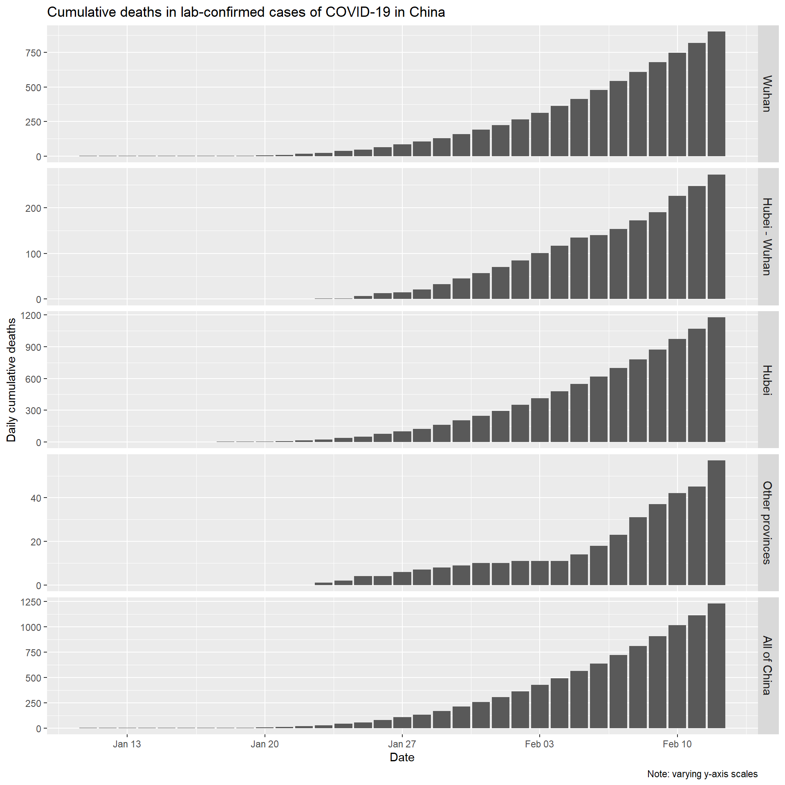
Let’s also look at the daily incremental deaths in lab-confirmed cases.
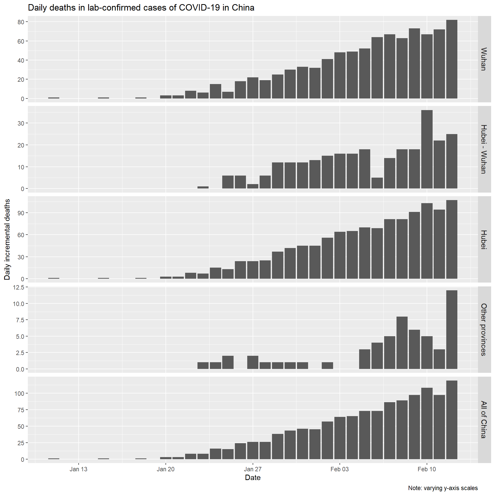
Incidence and deaths
Finally, let’s also look at the number of daily incremental lab-confirmed incident cases and the daily incremental deaths in lab-confirmed cases, aligned by date.
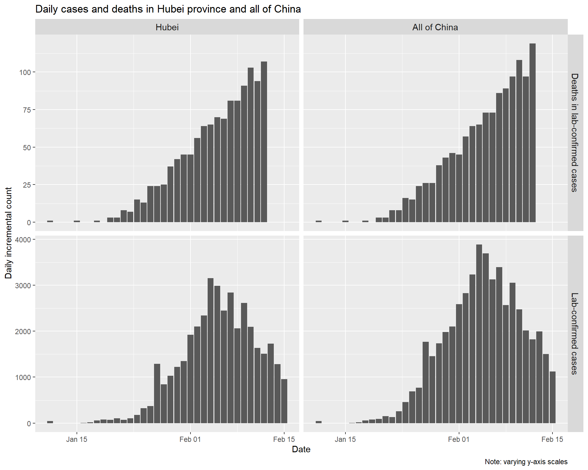
Clearly daily counts of deaths are continuing to rise despite the fact that the daily count of new cases is now falling. This is not surprising, given that it takes some time for cases to either recover or to die, and therefore the trend in deaths will necessarily lag behind any trend in daily incidence.
Fitting an SIR model to the Hubei province data
The basic idea behind the SIR model of communicable disease outbreaks is that there are three groups (also called compartments) of people: those who are healthy but susceptible to the disease \(S\), the infectious (and thus, infected) \(I\) and people who have recovered \(R\):

To model the dynamics of the outbreak we need three differential equations, to describe the rates of change in each group, parameterised by \(\beta\) which controls the transition between \(S\) and \(I\) and \(\gamma\) which controls the transition between \(I\) and \(R\):
\[\frac{dS}{dt} = - \frac{\beta I S}{N}\]
\[\frac{dI}{dt} = \frac{\beta I S}{N}- \gamma I\]
\[\frac{dR}{dt} = \gamma I\]
The first step is to express these differential equations as an R function.
To fit the model to the data we need two things: a solver for these differential equations and an optimiser to find the optimal values for our two unknown parameters, \(\beta\) and \(\gamma\). The function ode() (for ordinary differential equations) from the deSolve package for R makes solving the system of equations easy, and to find the optimal values for the parameters we wish to estimate, we can just use the optim function built into base R. Specifically what we need to do is minimise the sum of the squared differences between \(I(t)\), which is the number of people in the infectious compartment \(I\) at time \(t\), and the corresponding number of cases as predicted by our model \(\hat{I}(t)\). This quantity is known as the residual sum of squares (RSS)1.
\[RSS(\beta, \gamma) = \sum_{t} \left( I(t)-\hat{I}(t) \right)^2\]
Rather than fit a model to the incidence data for all of China, let’s fit a model to the incidence data for Hubei province only, given that Hubei contains Wuhan, the city which is the source of the outbreak. Most cities in Hubei have been isolated from the rest of China since 23rd January, so it makes sense to model Hubei separately. We need a value \(N\) for the initial uninfected population. Once again we’ll scrape population data from a suitable wikipedia page
The approximate population of Hubei province in 2017 was 59,020,000 people, according to this wikipedia page.
Next, we need to create a vector with the daily cumulative incidence for Hubei, from 15th January when our daily incidence data starts, through to 30th January. We’ll then compare the predicted incidence from the SIR model fitted to these data with the actual incidence since 30th January. We also need to initialise the values for \(S\), \(I\) and \(R\).
# put the daily cumulative incidence numbers for Hubei from
# 15th Jan to 30th Jan into a vector called Infected
sir_start_date <- "2020-01-15"
Infected <- cumulative_incidence %>%
filter(province == "Hubei",
Date >= ymd("2020-01-15"),
Date <= ymd("2020-01-30")) %>%
pull(cumulative_incident_cases)
# Create an incrementing Day vector the same length as our cases vector
Day <- 1:(length(Infected))
# now specify initial values for S, I and R
init <- c(S = N-Infected[1], I = Infected[1], R = 0)
Then we need to define a function to calculate the \(RSS\), given a set of values for \(\beta\) and \(\gamma\).
# define a function to calculate the residual sum of squares (RSS),
# passing in parameters beta and gamma that are to be optimised for the
# best fit to the incidence data
RSS <- function(parameters) {
names(parameters) <- c("beta", "gamma")
out <- ode(y = init, times = Day, func = SIR, parms = parameters)
fit <- out[ , 3]
sum((Infected - fit)^2)
}
Finally, we can fit the SIR model to our data by finding the values for \(\beta\) and \(\gamma\) that minimise the residual sum of squares between the observed cumulative incidence and the predicted cumulative incidence. We also need to check that our model has converged, as indicated by the message shown below:
# now find the values of beta and gamma that give the smallest RSS,
# which represents the best fit to the data. Start with values of 0.5 for each,
# and constrain them to the interval 0 to 1.0
Opt <- optim(c(0.5, 0.5), RSS,
method = "L-BFGS-B",
lower = c(0, 0), upper = c(1, 1))
# check for convergence
Opt$message
[1] "CONVERGENCE: REL_REDUCTION_OF_F <= FACTR*EPSMCH"Convergence is confirmed. Now we can examine the fitted values for \(\beta\) and \(\gamma\).
Those values don’t mean a lot, per se, but let’s use them to get the fitted numbers of people in each compartment of our SIR model for the dates up to 30th January that were used to fit the model, and compare those fitted values with the observed data.
# time in days for predictions
t <- 1:as.integer(today() - ymd(sir_start_date))
# get the fitted values from our SIR model
fitted_cumulative_incidence <- data.frame(ode(y = init, times = t,
func = SIR, parms = Opt_par))
# add a Date column and join the observed incidence data
fitted_cumulative_incidence <- fitted_cumulative_incidence %>%
mutate(Date=ymd(sir_start_date) + days(t-1),
province="Hubei") %>%
left_join(cumulative_incidence %>%
ungroup() %>%
filter(province=="Hubei") %>%
select(Date, cumulative_incident_cases))
# plot the data
fitted_cumulative_incidence %>%
filter(Date <= ymd("2020-01-30")) %>%
ggplot(aes(x=Date)) + geom_line(aes(y=I), colour="red") +
geom_point(aes(y=cumulative_incident_cases), colour="orange") +
labs(y="Cumulative incidence",
title="COVID-19 fitted vs observed cumulative incidence, Hubei province",
subtitle="(red=fitted incidence from SIR model, orange=observed incidence)")
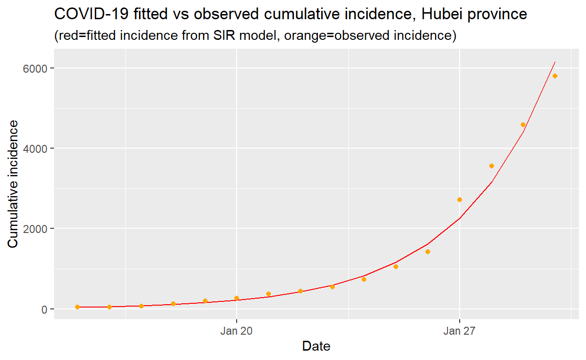
That looks like a reasonably good fit to the observed cumulative incidence data, so we can now use our fitted model to calculate the basic reproduction number \(R_{0}\) which gives the average number of susceptible people who are infected by each infectious person:
\[R_{0} = \frac{\beta}{\gamma}\]
We get:
R0
2.004167 An \(R_{0}\) of 2.0 is consistent the values calculated by others for COVID-19, and is also consistent with the \(R_{0}\) for SARS and MERS, which are similar diseases also caused by coronavirus.
Using the SIR model for Hubei province to make predictions
The next step is to use our fitted SIR model to make predictions about the future course of the outbreak. However, caution is required, because the SIR model assumes a fixed reproduction number, but if public health interventions have been implemented, such as quarantining of cases, contact tracing and isolation of those contacts, and general restrictions on social mixing, such as closing the city of Wuhan, then the effective reproduction number \(R_{e}\) will be dynamic and should fall as those interventions are progressively implemented, to values considerably less than the basic reproduction number \(R_{0}\), which reflects the behaviour of the virus at the beginning of an epidemic before any response has been implemented.
So let’s use our SIR model, fitted to the first 15 days of data, to extrapolate out to the current date, and compare that against the observed values:
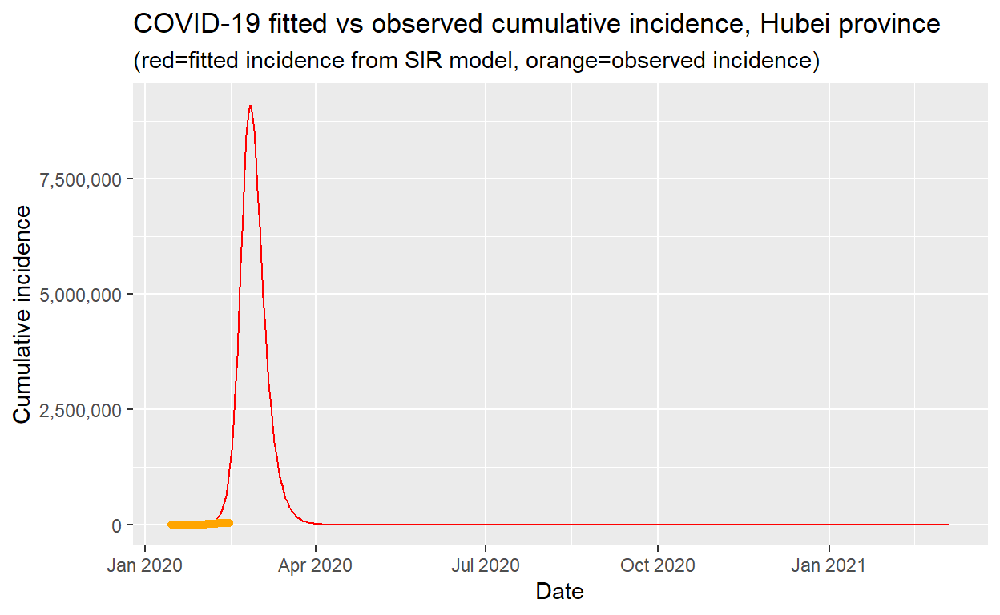
We can see that the actual incidence is much lower than that predicted by our model. The reason is that, due to the swift and decisive public health interventions implemented by the Chinese authorities, the \(R_{e}\) of the COVID-19 in Hubei province has already been substantially reduced. When the \(R_{e}\) falls below 1.0, the peak of the epidemic (at least in Hubei) will have been reached and the outbreak will eventually die out.
Using our model to let the outbreak “run its course” without intervention
It is instructive to use our model fitted to the first 15 days of available data on lab-confirmed cases in Hubei province, to see what would happen if the outbreak were left to run its course, without public health interventions.
# time in days for predictions
t <- 1:70
# get the fitted values from our SIR model
fitted_cumulative_incidence <- data.frame(ode(y = init, times = t,
func = SIR, parms = Opt_par))
# add a Date column and join the observed incidence data
fitted_cumulative_incidence <- fitted_cumulative_incidence %>%
mutate(Date=ymd(sir_start_date) + days(t-1),
province="Hubei") %>%
left_join(cumulative_incidence %>%
ungroup() %>%
filter(province=="Hubei") %>%
select(Date, cumulative_incident_cases))
# plot the data
fitted_cumulative_incidence %>%
ggplot(aes(x=Date)) + geom_line(aes(y=I), colour="red") +
geom_line(aes(y=S), colour="black") +
geom_line(aes(y=R), colour="green") +
geom_point(aes(y=cumulative_incident_cases), colour="orange") +
scale_y_continuous(labels = scales::comma) +
labs(y="Persons",
title="COVID-19 fitted vs observed cumulative incidence, Hubei province") +
scale_colour_manual(name = '',
values =c('red'='red', 'black'='black', 'green'='green', 'orange'='orange'),
labels = c('Susceptible', 'Recovered', 'Observed incidence', 'Infectious'))
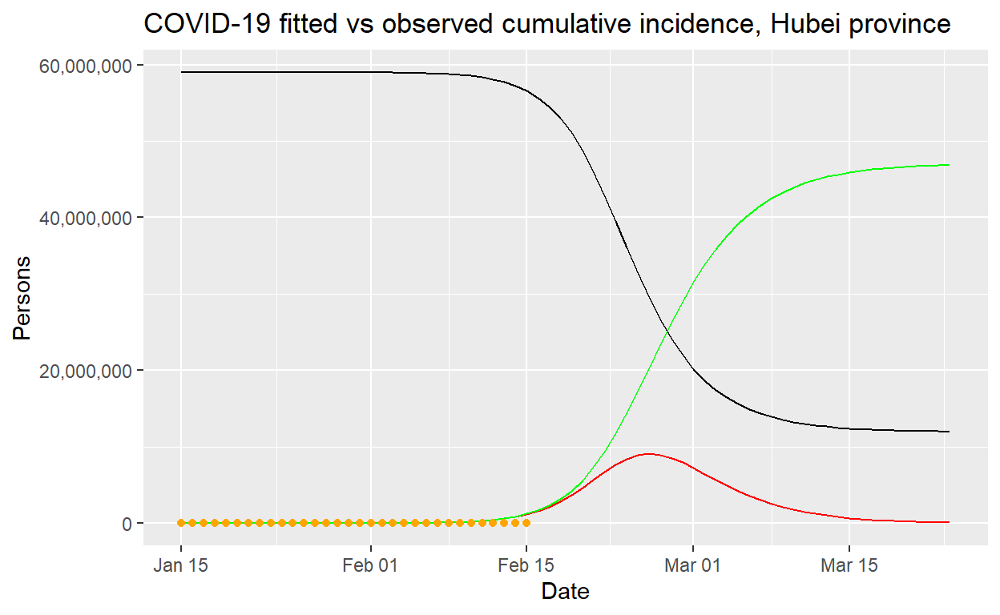
It is easier to see what is going on if we use a log scale:
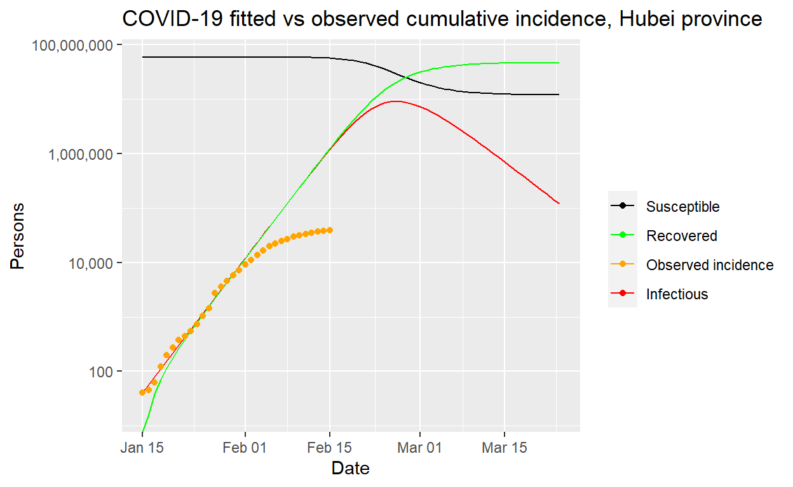
Clearly that prediction, should it come to pass, would be an unmitigated disaster. At this point, it is worth remarking on the importance of decisive public health intervention to limit the spread of such epidemics. Without such interventions, tens of millions of people could be infected, as our model predicts, and even with only a one or two per cent mortality rate, hundreds of thousands of people would die.
Ascertainment rates
So far, we have assumed that the counts of lab-confirmed cases represent all the cases that are infectious. This is unlikely to be true – typically only a proportion of actual cases are detected or found or sent for testing. This proportion is known as the ascertainment rate. The ascertainment rate is likely to change during the course of an outbreak, particularly if surveillance and screening efforts are increased, or if case definitions are changed. Such changing ascertainment rates can be easily incorporated into our model by using a set of weights, or a weighting function, for our incidence data, but for the sake of simplicity, let’s see what happens if we assume a fixed ascertainment rate of 20%. If we apply that, thus inflating the number of incident cases by a factor of 5, and refit our model, we get the following results.
[1] "CONVERGENCE: REL_REDUCTION_OF_F <= FACTR*EPSMCH" beta gamma
0.6671730 0.3328275 R0
2.004561 Note that these fitted parameters are the same as the ones we got above, without an ascertainment rate adjustment. Let’s look at the fitted values.
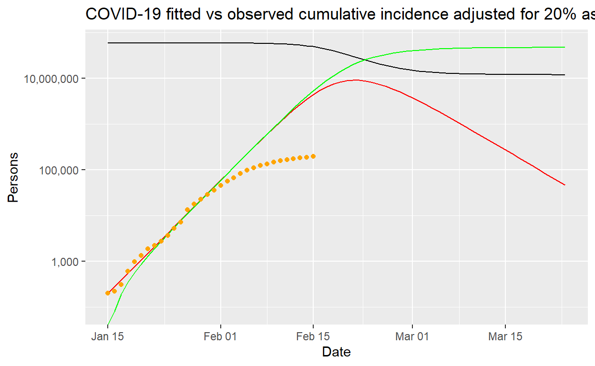
Perhaps counter-intuitively, incorporation of a fixed 20% ascertainment rate adjustment into our model makes little difference to the modelled outbreak if it is let run its course, except that it all happens a bit more quickly. But the number of infections remains the same, and the basic reproduction number is unchanged. Note that that is for a fixed ascertainment rate. If the ascertainment rate varies significantly over time, then the parameter estimates will necessarily be biased – but in the early days of an outbreak, it may be reasonable to assume that ascertainment rates don’t change too much.
Modelling the epidemic trajectory using log-linear models
As noted above, the initial exponential phase of an outbreak, when shown in a semi-log plot (the y-axis with a logarithmic transform), appears (somewhat) linear. This suggests that we can model epidemic growth, and decay, using a simple log-linear model of the form:
\[log(y) = rt + b\]
where \(y\) is the incidence, \(r\) is the growth rate, \(t\) is the number of days since a specific point in time (typically the start of the outbreak), and \(b\) is the intercept. Separate models are fitted to the growth and the decay parts of the epidemic (incidence data) curve.
The incidence package for R, part of the excellent R Epidemics Consortium (RECON) suite of packages for epidemic modelling and control, makes the fitting of such models very convenient. We’ll use that package to fit such a model. We need to convert daily case counts back into one case per row format first. The uncount() function the the tidyr package is perfect for doing that.
# create a vector of dates, in character form, one for each case in Hubei province on each date
# using the uncount() function.
hubei_incidence_function_data <- provinces_confirmed %>%
filter(Date >= ymd("2020-01-11")) %>%
mutate(HubeiSansWuhan = ifelse(is.na(HubeiSansWuhan), 0, HubeiSansWuhan)) %>%
mutate(incident_cases=ifelse(Date < ymd("2020-02-15"),
Wuhan + HubeiSansWuhan,
Hubei)) %>%
mutate(Date=format(Date, "%Y-%m-%d")) %>%
select(Date, incident_cases) %>%
uncount(incident_cases)
hubei_incidence_object <- incidence(hubei_incidence_function_data$Date)
We can then find the date of peak incidence and indicate that on a plot of the daily incidence data. The find_peak() function in the incidence library does that for us.
hubei_incidence_peak <- find_peak(hubei_incidence_object)
plot(hubei_incidence_object) +
geom_vline(xintercept = hubei_incidence_peak, col = "red", lty = 2) +
labs(title="Daily incidence of lab-confirmed cases, Hubei province",
subtitle = "(red line indicates date of peak incidence)")
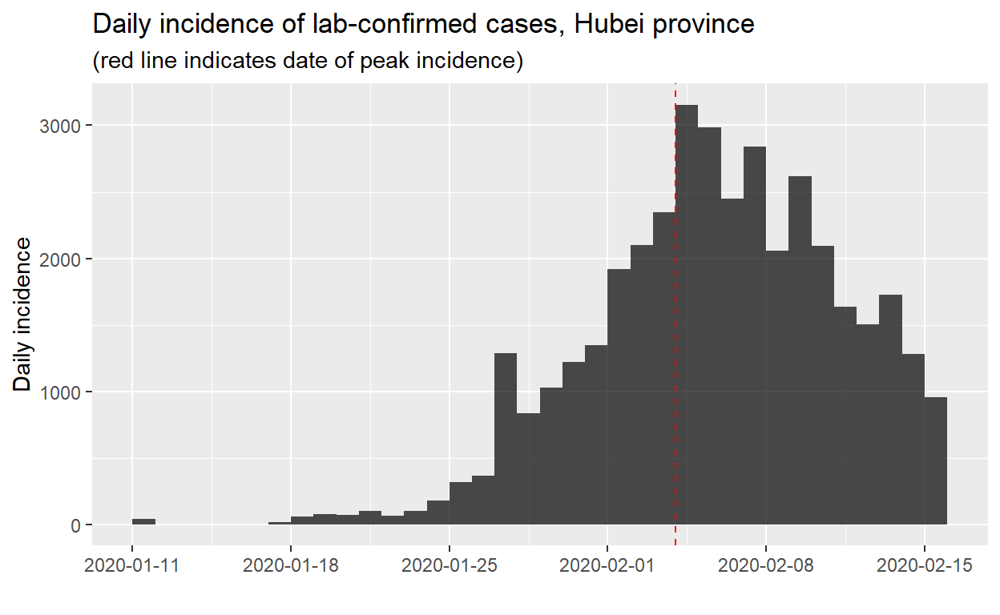
Now we can use the fit() function to fit two log-linear models, one to the growth phase before the peak, and one to the decay phase after the peak. We can plot the fitted values from our models (with confidence limits) on top of the actual observed incidence data for Hubei province.
hubei_incidence_fit <- incidence::fit(hubei_incidence_object,
split=hubei_incidence_peak)
# plot the incidence data and the model fit
plot(hubei_incidence_object) %>%
add_incidence_fit(hubei_incidence_fit) +
labs(title="Observed and modelled incidence of COVID-19 cases",
subtitle="Hubei province, 2020")
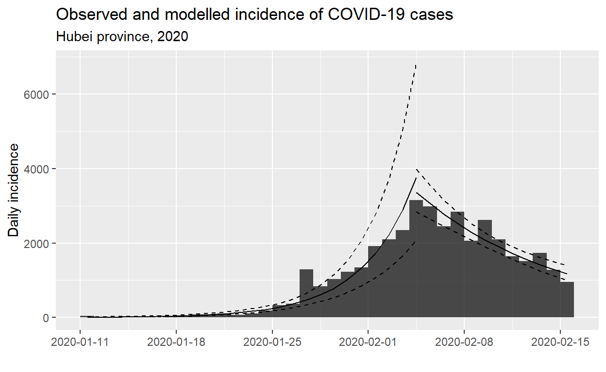
From the model, we can extract various parameters of interest: the growth rate prior to the peak was 0.26 (95% CI 0.21 - 0.31), and the decay rate after the peak was -0.095 (95% CI -0.0695 - -0.121).
These growth and decay rates are equivalent to a doubling time of 2.7 days (95% CI 2.2 - 3.3 days), and a halving time of 7.3 days (95% CI 5.7 - 10.0 days).
The doubling and halving time estimates are very handy for informing public health intervention policy, which we will discuss in the conclusion.
Estimating the reproduction number from log-linear models
We can also use these log-linear models of the epidemic trajectory to estimate the reproduction number in the growth and decay phases of the epidemic. We need to provide a distribution for the serial interval time, which is the time between the onset of a primary case and the time of onset in its secondary cases. We’ll use a mean of 7.5 days and a standard deviation of 3.4 days to parameterise a discrete gamma distribution for the serial interval. See the discussion in next section of serial intervals for justification of these values. Here is a histogram of our calculated distribution of possible values for \(R_{0}\) for the growth phase, based on the log-linear model we fitted to the Hubei incidence data:
mu <- 7.5 # days
sigma <- 3.4 # days
param <- gamma_mucv2shapescale(mu, sigma / mu)
w <- distcrete("gamma", interval = 1,
shape = param$shape,
scale = param$scale, w = 0)
growth_R0 <- lm2R0_sample(hubei_incidence_fit$before$model, w)
hist(growth_R0, col = "grey", border = "white", main = "Distribution of R0")
summary(growth_R0)
Min. 1st Qu. Median Mean 3rd Qu. Max.
3.641 4.150 4.454 4.520 4.785 6.198 Note that the central estimates for \(R_{0}\) are considerably higher than those we calculated with a SIR model fitted to the same Hubei province data, and are also higher than \(R_{0}\) estimates published elsewhere, but they are consistent with estimates of the instantaneous effective reproduction number \(R_{e}\) which we calculate in the next section2.
Here is the estimated \(R_{e}\) for the decay phase:
decay_R0 <- lm2R0_sample(hubei_incidence_fit$after$model, w)
hist(decay_R0, col = "grey", border = "white", main = "Distribution of R0")
summary(decay_R0)
Min. 1st Qu. Median Mean 3rd Qu. Max.
0.3825 0.4389 0.4748 0.4750 0.5111 0.6081 It is well below 1.0 – otherwise the epidemic would not be decaying, as we observe.
Projections
We saw above how we can make fairly naïve and highly alarming projections based on a simple SIR model. But more sophisticated projections are also possible.
Here we’ll examine the use of the projections package, which is also part of the RECON suite. From its manual page:
projectionsuses data on daily incidence, the serial interval (time between onsets of infectors and infectees) and the reproduction number to simulate plausible epidemic trajectories and project future incidence. It relies on a branching process where daily incidence follows a Poisson process determined by a daily infectiousness, computed as:
\[\lambda_t = \sum_{s=1}^{t-1} y_s w(t-s)\]
where \(w()\) is the probability mass function (PMF) of the serial interval, and \(y_s\) is the incidence at time \(s\).
We can just re-use the incidence() object for the Hubei incidence data which we created above for the purposes of fitting log-linear models to the epidemic trajectories. We’ll also use the discrete serial interval distribution we created, and the median reproduction number we calculated above for the growth and decay phases of the outbreak in Hubei province, in order to test the projection of those phases of the epidemic in Hubei forwards. We’ll base these projections on only the first parts of the growth and decay phases, so that we can then compare the resulting projections against the observed incidence data for the balance of thoe phases. If the projections match that observed reality reasonably well, we can then have some confidence in any forward projections into the future which we make. Such projections are obviously valuable for planning purposes – for example, during the decay phase of an epidemic, projections of the decay can be used to inform how long public health interventions such as transport lock-downs and mandatory social isolation may have to be kept in place.
First we’ll project the Hubei province incidence data for the first part of the growth phase of the epidemic. Recall that we found the peak of the epidemic (daily incidence) curve for Hubei to have occured on 04 February 2020. Thus, we’ll base our projection on the Hubei incidence data up to 14 days before that peak, and compare with the observed data.
set.seed(1)
pred_fwd_days <- 10
date_range <- 1:(which(get_dates(hubei_incidence_object) == hubei_incidence_peak) - pred_fwd_days)
test_pred_growth <- project(hubei_incidence_object[date_range],
R = median(growth_R0),
si = w,
n_days = pred_fwd_days, n_sim = 1000)
# convert the test_pred_growth matrix to a data frame and get the median
# incidence for all the simulations for each date
test_pred_growth_median_counts <- test_pred_growth %>%
as.data.frame() %>%
pivot_longer(-dates,
names_to="simulation",
values_to="incidence") %>%
group_by(dates) %>%
summarise(incident_cases=as.integer(median(incidence))) %>%
mutate(data_type = "projection")
test_pred_growth_median_counts %>%
bind_rows(tibble(dates=get_dates(hubei_incidence_object),
incident_cases=get_counts(hubei_incidence_object),
data_type="observed")) %>%
ggplot(aes(x=dates, y=incident_cases, colour=data_type)) +
geom_point() +
geom_line() +
labs(x="", y="Daily incident confirmed cases",
title="Observed versus growth-phase projection of incident cases\nin Hubei province",
subtitle=paste("(projection based on observed case counts up to",
format(hubei_incidence_peak - days(pred_fwd_days), "%d %B %Y"),
")")) +
theme(legend.position="top", legend.title = element_blank())
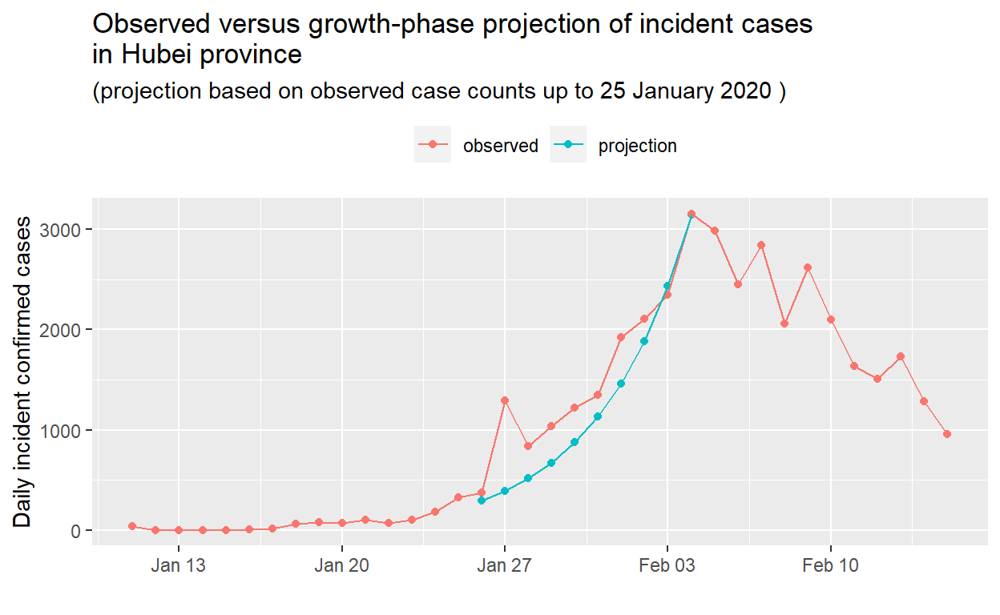
The projection, based only on observed data up to 25 January 2020, is in remarkably close agreement with the observed data. Let’s do the same for the decay phase, this time holding out 5 days of the observed decay from our prediction.
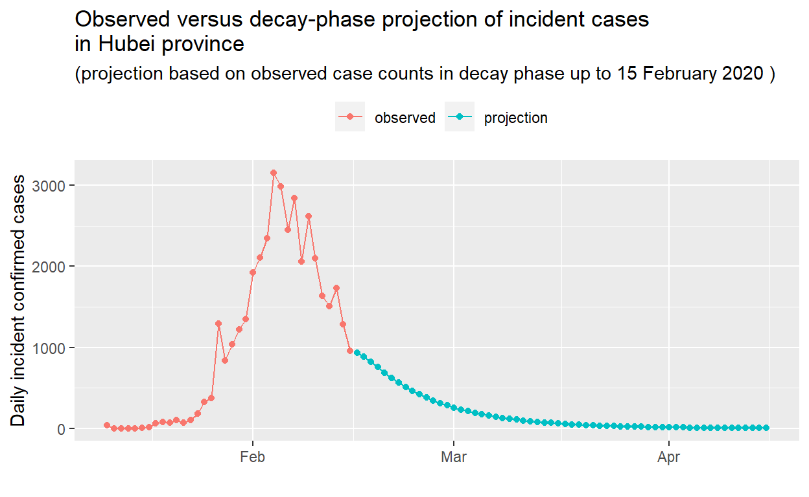
Based on that projection, it will take until the beginning of April for the outbreak in Hubei to be extinguished. But perhaps that is too conservative a prediction.
Conclusions
Public health considerations
It seems likely that China has done a good job against the COVID-19 outbreak, having successfully mitigated the spread of the virus through very decisive and prompt public health action, in particular closing Wuhan and other cities in Hubei province, and implementing strict social isolation policies within those cities.
Just how long these measures will need to remain in place depends is unclear, but could be estimated using methods similar to those described above.
Data science considerations
From a data science (and public health) perspective, the main thing to note is that by doing all this data manipulation and model estimation using program code, as we have been doing, rather than using spreadsheets or some other manual process, it is very easy to re-run everything on-demand in just a minute or so, and thus current estimates and projections can readily be automatically updated as new observed data becomes available each day, or even every hour.
The absence of better serial interval data is unfortunate. These data can be sampled – it isn’t necessary to collect these data for everycase, just a representative sample of them.
Similarly better line-listing data, even if only for samples of cases, would facilitate modelling of outbreak control and estimation of how long public health controls need to be kept in place in each jurisdiction.